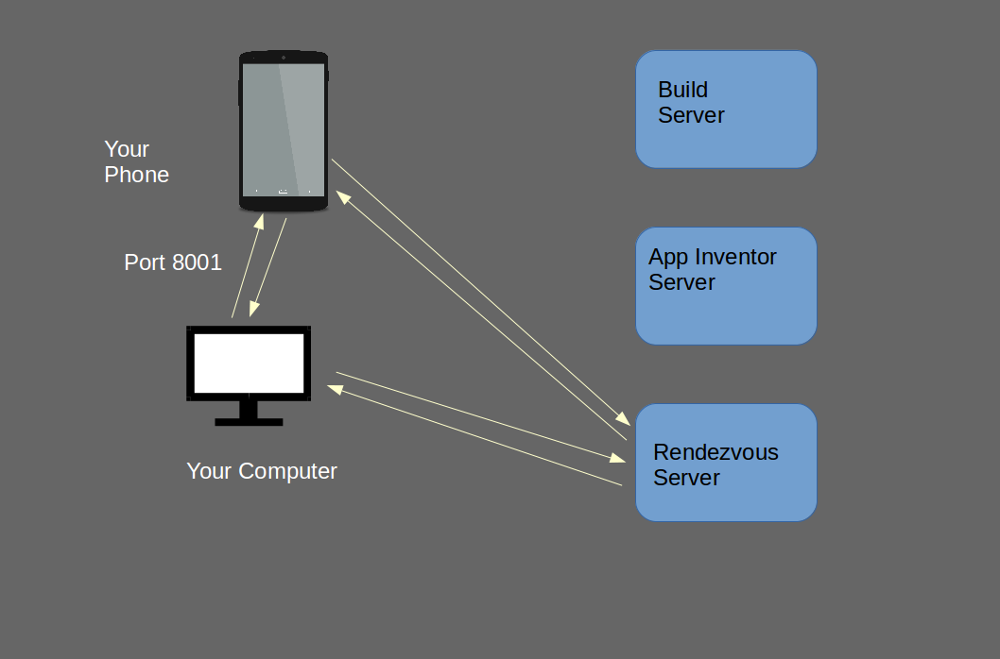

MIT App Inventor: A Look Under the Hood
Jeffrey I. Schiller
MIT App Inventor
Developer, Guru, Fixer of Broken Things
Code Monkey
MIT App Inventor is Large
- And Growing…
- Some Numbers
- 2.8 Million Unique Users
- 50,000 Daily Users
- 350,000 Monthly Users
- 10 Million Projects
- 8 Terra Bytes of Storage
The Pieces
- The App Inventor Server
- Deployed in Google’s “App Engine”
Scales as needed
- Serves up the App Inventor code
- Stores people’s projects
- The Build Server
- Handles the packaging of Finished Apps
- Cannot run in App Engine due to limitations of App Engine
- We currently deploy 72 CPU Codes across 9 Servers
- Your Device –
Your favorite Android Device (or emulator)
- Your Computer
- The Rendezvous Server
Login Flow
- Your Computer Contacts App Engine (ai2.appinventor.mit.edu)
- Google determines if you are logged in and puts up the Login page
if not
- The App Inventor Client loads into your browser
- App Inventor is really a full blown application that does most of
its work in your browser!
- The Server is just used to download the client and to store
projects
- The list of projects you own is loaded into your browser
- Your most recent project is then loaded and opened
- You work!
Incremental Development
- Three ways to do incremental development
- A Phone/Tablet via a WiFi network
- A Phone/Tablet connected via the USB Cable
- An emulator running on your computer
- What we support
- We support devices to Android 1.6 (Donut)
- But we recommend at least Gingerbread (2.3)
- Newer features require newer devices
- The Emulator is currently emulating 2.2 (Froyo)
- We would like to use a newer version, but they load
even slower (!!)
- Using a Real device (Phone/Tablet) works best
Incremental Development – Connecting
- WiFi Connection
- The trick is finding the right device!
- When your phone is on WiFi it has an Internet Address (IP)
- Your computer needs to learn the phone’s IP Address
- This is done with the Rendezvous Server
- When you “Connect->AI Companion” your computer generates a six
character code which is displayed to you along with an equivalent
QR Code
- When you scan the code (or enter the code) in your phone it is
sent to the Rendezvous Server along with the phone’s IP Address
- The Computer polls once per second to find the IP Address
- Once the Computer learns the IP address of the phone, it talks
directly to the phone
- The phone is actually running a small webserver
Incremental Development – Connecting

Trouble Shooting
- There are three ways things can go wrong
- The phone cannot reach the Rendezvous Server
- The computer cannot reach the Rendezvous Server
- The computer cannot reach the phone
- If the QR Code does not dismiss (go away)
- If the QR Code does dismiss
- Then the computer cannot reach the phone
- Make sure port 8001 isn’t blocked
- Often firewall software on the computer can block this port
- Often WiFi networks are configured to block connections to
devices
Packaging Apps
- This is the job of the Buildserver
- Too much computation for App Engine
- We have 9 buildservers each with 8 cores behind a load balancer
The Magic behind Incremental Development
- Blocks get compiled to “Scheme” code
- Scheme is a Lisp like language
- (+ 3 4)
- (define (fact x)
(if (= x 0) 1
(* x (fact (- x 1)))))
- When you define an event handler
- For example: Button1.Click
- It defines a Scheme function which performs the blocks
- The scheme definition is sent to the phone
- The Magic is that when you update the blocks, you update the
definition of the function which is sent to the phone and replaces
the previous definition. Result: New behavior in real-time
Packaging Apps
- Compile the blocks to Scheme
- Compile the Scheme to Java Byte-Code
- “Dex” it to Dalvik/ART Code
- Apps run at native Android speed